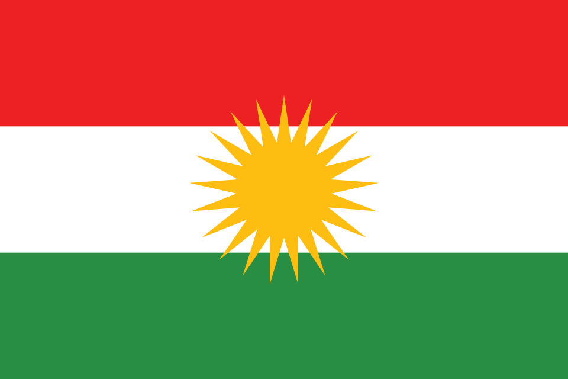

The colors of the Kurdish flag are red, white, yellow and green.
The red symbolizes the blood of the soldiers who fought for the freedom of Kurdistan.
The white represents the peace of Kurdistan.
The yellow is the bright sun of Kurdistan.
The green is for the beautiful nature of Kurdistan.
The sun in the middle of the flag has 21 rays, for the 21st of March, which is Newroz day.